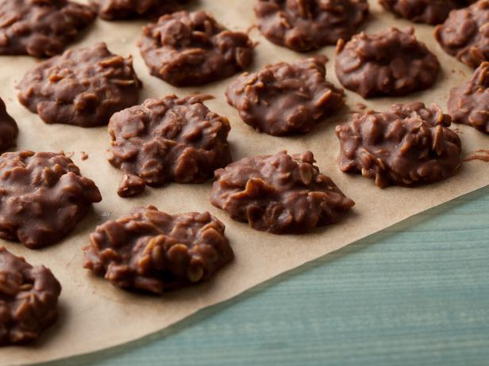

No Bake Cookies

The ultimate friend of bad bakers
This cookie is one of the most simple ways to "bake" something. You simply just put some ingredients together
and then stick in in the fridge and voila, you have some delicious cookies. I have many fond memories of my
mother making these cookies and me getting to eat them while they are still warm and gooey.
Ingredients
- 2 cups sugar
- 1/2 cup milk
- 1 stick (8 tablespoons) unsalted butter
- 1/4 cup unsweetened cocoa powder
- 3 cups old-fashioned rolled oats
- 1 cup smooth peanut butter
- 1 tablespoon pure vanilla extract
- Large pinch kosher salt
Instructions
- Line a baking sheet with wax paper or parchment.
- Bring the sugar, milk, butter and cocoa to a boil in a medium saucepan over medium heat, stirring occasionally,
then let boil for 1 minute. Remove from the heat. Add the oats, peanut butter, vanilla and salt, and stir to combine.
- Drop teaspoonfuls of the mixture onto the prepared baking sheet, and let sit at room temperature until cooled and hardened,
about 30 minutes. Refrigerate in an airtight container for up to 3 days.